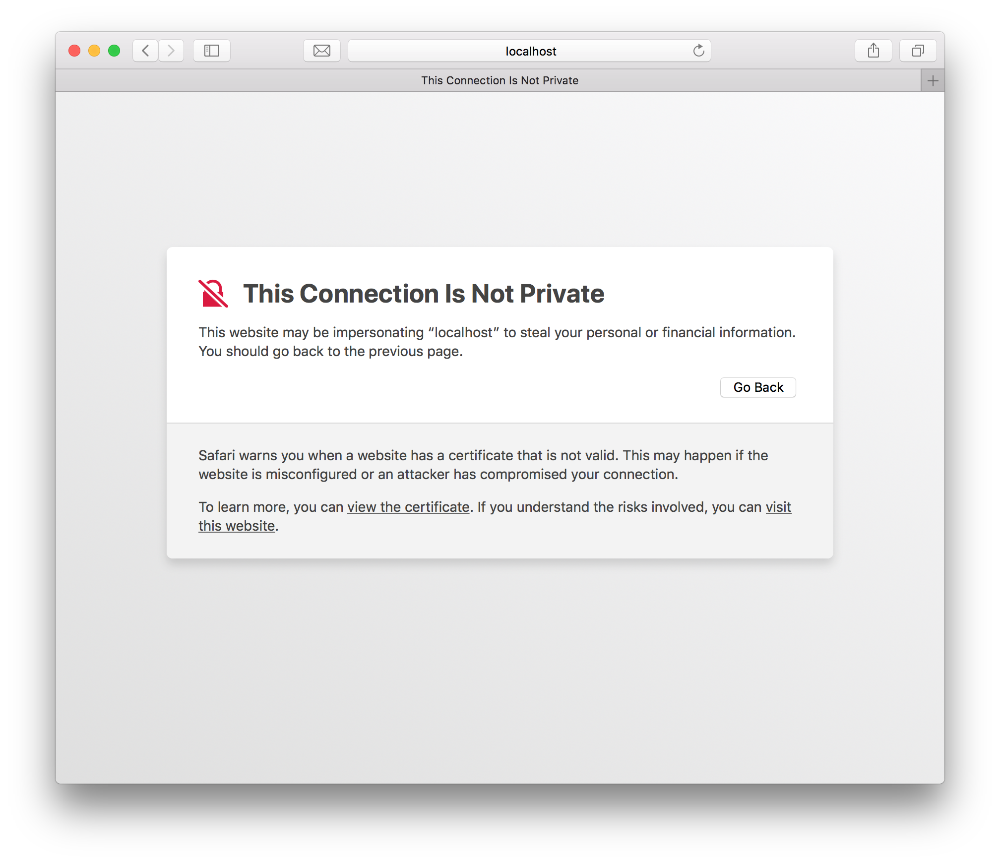
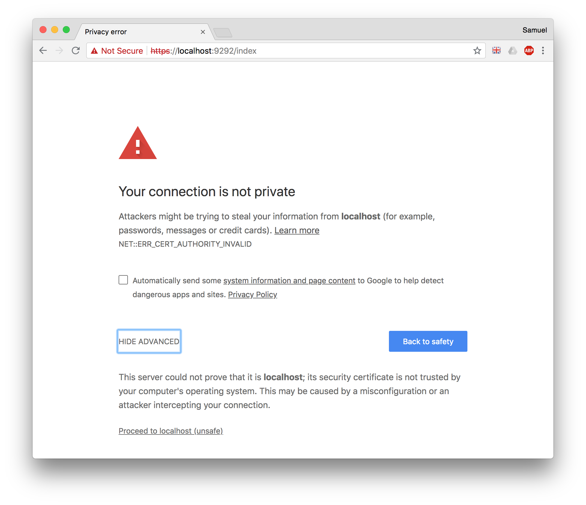

Browser Configuration
This guide explains how to configure your local browser in order to avoid warnings about insecure self-signed certificates.
Safari
If you use this with a web server, when you open the site in Safari:

- Click "View the certificate" to check that it is the correct certificate.
- Click "visit this website" which will prompt you to add the certificate to your keychain. Once you've done this, it should work for a long time.
Chrome
If you use this with a web server, when you open the site in Chrome:

- Click "ADVANCED" to see additional details, including...
- Click "Proceed to localhost (unsafe)" which will allow you to use the site for the current browser session.
Self-Signed Localhost
The best way to use Chrome with self-signed localhost certificates is to allow it in your chrome settings: chrome://flags/#allow-insecure-localhost.